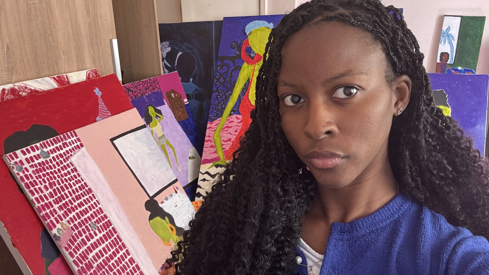

Ajuri
Jaa bee ɔdɔi jaa?
Welcome / Bienvenue / Bem Vindo.
An artist based in London, primarily working in acrylic. I count Tam Joseph, Tracey Emin, Chris Ofili, Kerry James Marshall, and Lynette Yiadom-Boakye among my inspirations.
I draw inspiration from photography and visual media — some references include Carrie Mae Weems' Kitchen Table series, Rafael Pereira, Catrien Ariëns, and Sophie Muller's music video work.
Currently working on: A Manifesto
Listen to: Love Theme From Spartacus x Yusuf Lateef
Find more of my work here.